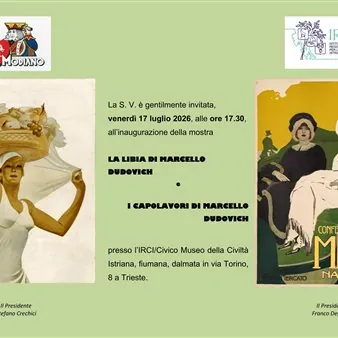

da ven 17 lug a dom 8 nov
La Libia di Marcello Dudovich e i capolavori di Marcello Dudovich
Le due età di Dudovich. Opere scelte da due grandi collezioni italiane. Dudovich, 1900 All’inizio del Novecento il triestino Marcello Dudovich ha poco più di vent’anni. È dunque un giovanissimo cartellonista di ottime speranze: lavora a Bologna e fa incetta di premi nei concorsi…
 Indicazioni
Indicazioni
- Costi e prenotazioni
- Costo non indicato · Prenotazione non indicata
- Programma
- Programma da verificare. Apri la fonte ufficiale per orari e possibili aggiornamenti.
- In caso di maltempo
- Nessuna indicazione specifica pubblicata.
- Note
- Acquisito automaticamente dalla fonte.
L’EVENTO
Descrizione completa
La mostra rimarrà visitabile tutti i giorni fino a settembre con i consueti orari: 10.30-12.30 e 16.30-18.30 presso il Civico Museo della Civiltà Istriana Fiumana e Dalmata, in via Torino 8.
Le due età di Dudovich. Opere scelte da due grandi collezioni italiane.
Dudovich, 1900 All’inizio del Novecento il triestino Marcello Dudovich ha poco più di vent’anni. È dunque un giovanissimo cartellonista di ottime speranze: lavora a Bologna e fa incetta di premi nei concorsi indetti annualmente in città, poi approderà alle prestigiose Officine Grafiche Ricordi di Milano e spiccherà il volo, con manifesti che si sono emancipati da ogni suggestione decorativa e allegorica di sapore Liberty e puntano su un inedito gusto della sintesi formale e sulle grandi campiture di colore privo di ombreggiature. Soggetti vincenti per i messaggi pubblicitari così ideati sono le seducenti figure femminili, che rimarranno la sua cifra identificativa, fino a farlo considerare – a ragione – il più importante cartellonista italiano del ‘900. Gli anni giovanili, fino al 1910 - 1912 sono i più originali e creativi, con capolavori assoluti realizzati per grandi marchi (Campari, Borsalino, Strega, Uliveto, Fonotipia) ma soprattutto per i grandi magazzini napoletani di abbigliamento dei fratelli Mele: una “galleria” ancor oggi di straordinario impatto visivo.
Dudovich, 1937 Il più celebre cartellonista italiano è entrato da qualche tempo in una sorta di cono d’ombra, si sente invecchiato e attardato in un mondo, dell’arte e della grafica, che negli anni Trenta sta cambiando radicalmente: emergono cartellonisti di nuova generazione, in pubblicità si scoprono la fotografia e il fotomontaggio, si impongono nuovi stili di design (Studio Boggeri, Ufficio Tecnico Pubblicità Olivetti). A questo Dudovich spiazzato giunge l’invito di Nives Comas Casati, sua nipote, allieva e modella, a recarsi a Tripoli, nella Libia colonizzata, dove il governatore Italo Balbo va radunando una “corte” di artisti italiani. L’impatto con quella realtà è provvidenziale: il sessantenne “Dudo” ritrova il gusto della pittura e dell’illustrazione, realizza alcuni manifesti ma soprattutto fotografa e ritrae i vari aspetti umani e sociali dell’habitat indigeno, sorprendente e affascinante, dando pure un personale contributo alla costruzione dell’immagine turistica della cosiddetta “quarta sponda”.
Organizzato da: IRCI/ Civico Museo della Civiltà istriana, fiumana, dalmata
IL PROGRAMMA
Programma e orari
Appuntamenti raccolti dalle fonti elencate. Dove manca un orario, non è ancora disponibile in questa scheda.
Programma pubblicato
- Dal 2026-07-17 al 2026-11-08
INFORMAZIONI UTILI
Prima di partire
- Controllare la fonte prima di partire.
ORGANIZZAZIONE